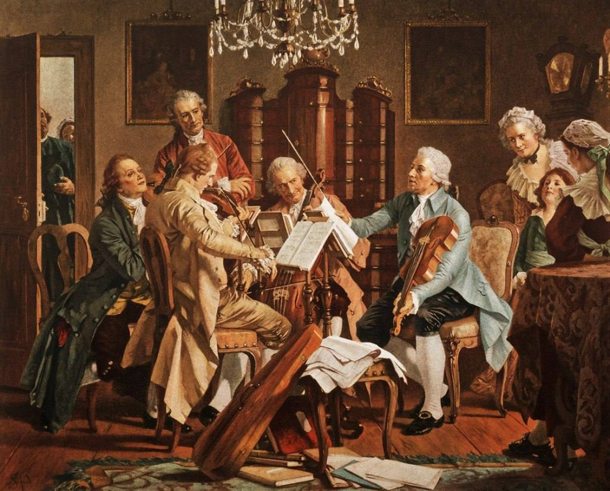
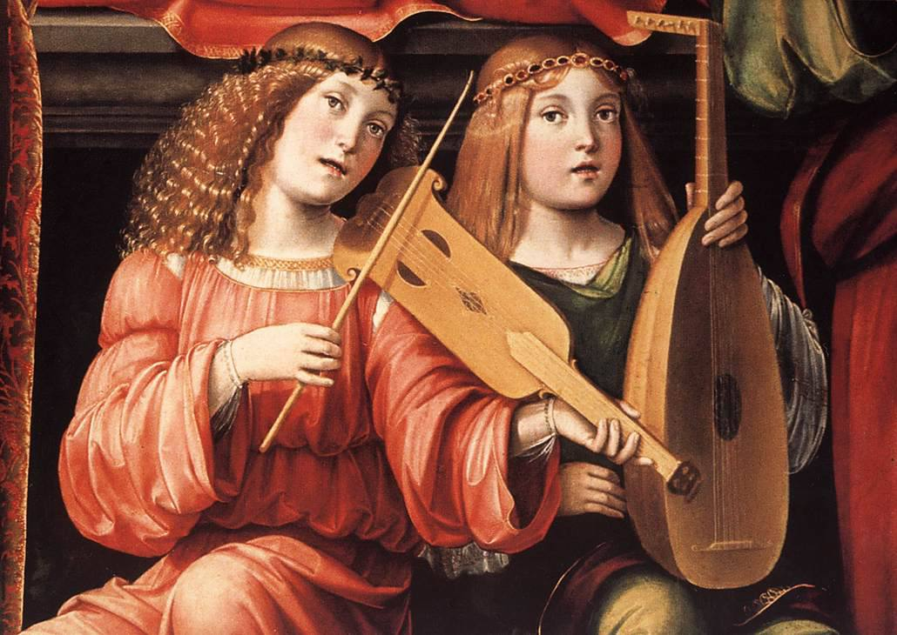

Origins of Classical Music
Classical music originated in Western Europe during the Medieval period (500–1400), with its roots in Gregorian chants used in the Catholic Church. These simple, monophonic chants evolved into polyphonic music, where multiple melodies were sung together. Early classical music was largely religious, but secular music also grew during this time with troubadours and minstrels performing in courts. The groundwork laid during the Medieval era set the stage for the more structured and complex forms of classical music that emerged in the Renaissance and beyond.
Early Music (Medieval and Renaissance, 500–1600)
Classical music has its roots in the Medieval period (500–1400), characterized by Gregorian chants—simple vocal music for church services. By the Renaissance (1400–1600), composers like Palestrina and Josquin des Prez began creating more complex choral music with multiple voice parts.
Baroque Era
The Baroque period was marked by highly ornate and dramatic music. Composers like Johann Sebastian Bach, George Frideric Handel, and Antonio Vivaldi developed complex instrumental forms, such as the fugue and concerto. Baroque music emphasized grandeur and expressiveness, often used in religious settings.
Classical Era
In the Classical period, music became more structured, balanced, and clear. Wolfgang Amadeus Mozart, Joseph Haydn, and Ludwig van Beethoven are the era’s most famous composers. This era saw the development of the symphony, sonata, and string quartet. Music from this period emphasized elegance and simplicity compared to the ornate Baroque style.
Romantic Era
The Romantic period focused on emotion, individualism, and the imagination. Composers like Frédéric Chopin, Johannes Brahms, Franz Schubert, and Pyotr Ilyich Tchaikovsky expanded musical forms and expressed deeper emotions through their works. Romantic music often had dramatic contrasts, and composers sought to convey personal feelings, nature, and national identities.
20th Century and Modern Classical
The 20th century brought about significant experimentation in classical music. Composers like Igor Stravinsky, Arnold Schoenberg, and John Cage pushed the boundaries of traditional forms, experimenting with atonality, dissonance, and electronic music. Minimalist composers like Philip Glass and Steve Reich simplified the structure of music, creating repetitive, meditative compositions.
Influence and Legacy
Classical music has laid the foundation for many modern music forms, influencing everything from film scores to contemporary genres. It remains a vital part of global culture, celebrated in concert halls worldwide.